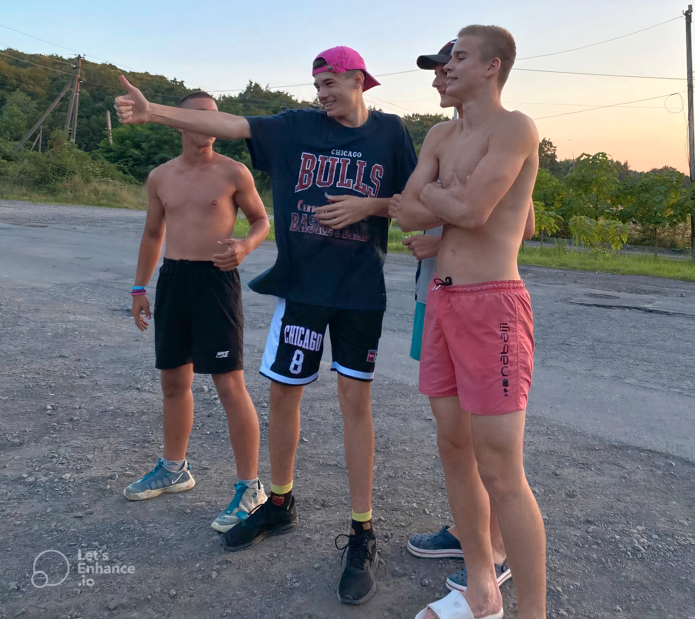
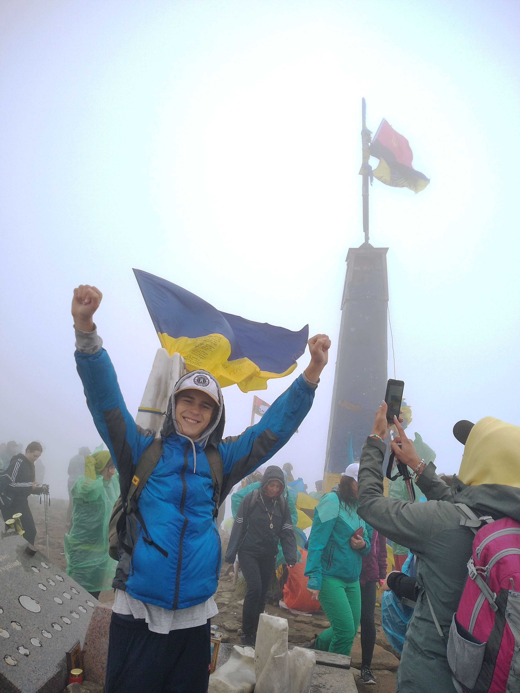
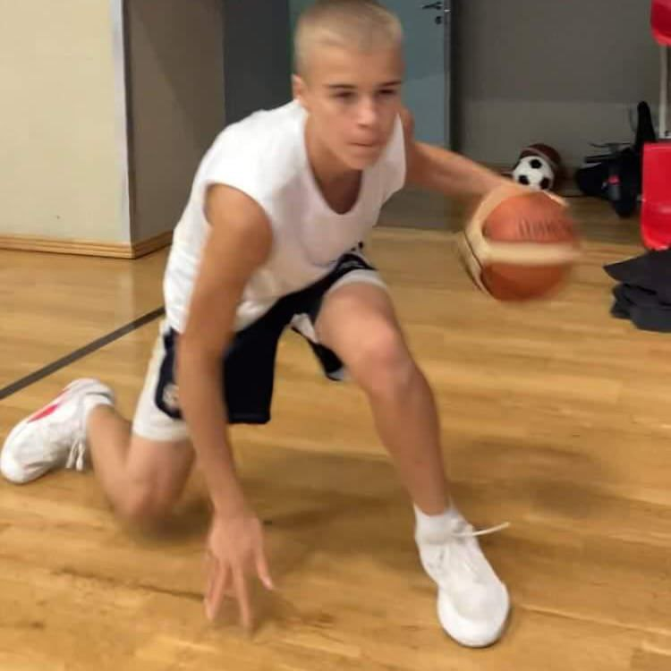

Picnic (22.08.2023)
It was such a fun experience! My friends and I planned to go out everyone together long time ago, but everytime someone was busy. This time everybody had free time and we decided to make a picnic. Day before we bought all needed groceries and rented a house for a day in Orikhovytsya. Luckily this was my friend Lera granpa's house and we don't pay for it at all. When we arrived everything was clean, so we right away went to rest in vet. Then we went to the river. While we were swimming, our friend Illya was cooking meat. There was tarzanka on river and everybody jumped from it. On my first try I slipped on mud and felt. It was a comedy). When we got back from swimming, grilled meat was ready and everybody was getting ready to eat. Meat was really tasty. Then we decided to ride a swing, but unfortunately it broke down. We tried to repair it for an hour, but we did not manage to get it done. When it got darker outside we turned on the music and started dancing. It was really cool disco. My favourite song on playlist was "Hit The Road Jack" by Ray Charles. All in all, everyone enjoyed themselves that day and we 100% planning to do it again one day!

Hoverla (22.07.2023)
It was very hard, but I made it! My Mom called me and said that we have oportunity to climb the highest mountain in Ukraine - Hoverla. I said YES right away when i heard it was fre for her and 2000UAH for me. It was a trip with her coworkers. Day before the trip I packed up my bag with warm clothes, shoes, and I borrowed Trekking poles from my sister. My sister Diana loves travelling and holidays on nature. Next day, we set off. Bus was very comfortable and had AC. We arrived to hotel in the evening, settled down and went to sleep. Next day, early in the morning (6:30am), we ate breakfast and were ready to climb to the top. Small bus drove us to the mointain Petros, 7km near Hoverla. It was really beautifyl and peacefull place. What impressed me, is that there were people that live there. Almost 2km above the sea level! It was rainy, so I put on a jacket and we started the lift. We were climbing for 4 hours, but it was worth it. I felt relief and freedom on the top. We took some photos, took a rest for 30 minutes and began to walk down the mountain. It was crazy to climb this mountain with no previous experience, but it was worth it).

Basketball Session (03.07.2023)
Grinding hard to make my dreams come true.

Pool Party (09.07.2023)
Chilling with my bros.

Painting With My Niece (23.06.2023)
Spending time with my lovely niece <3

Cooking Breakfast (14.07.2023)
I love to cook. Today made myself tasty breakfast)